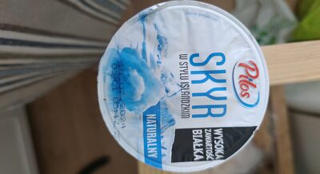
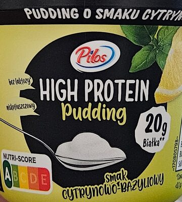
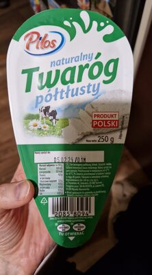
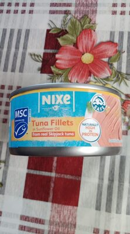
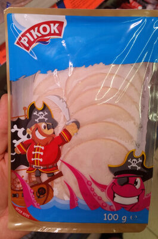
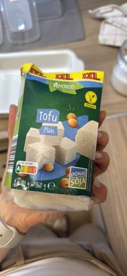
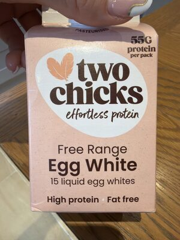
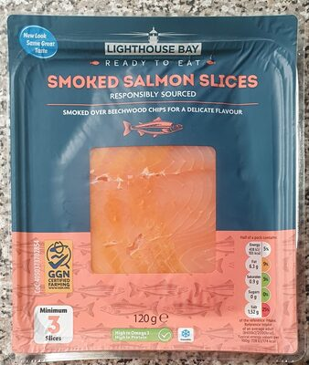

Najlepsze źródła białka w Lidlu
Pilos, Nixe i chłodnia proteinowa pod makro
Lidl wygrywa nabiałem marki własnej — Pilos i linie wysokobiałkowe — oraz rybami / tuńczykiem Nixe. Jeśli celujesz w skyr, pudding proteinowy i jogurt 10+ g białka, zacznij od chłodni.
Produkty warte uwagi

Pilos Skyr naturalny Chłodnia — naturalne wersje
Pilos High Protein pudding Sprawdź cukry na etykiecie
Pilos twaróg Klasyka redukcji
Nixe tuńczyk Hit lunchboxów — w wodzie
Pierś z kurczaka ~23 g / 100 g
Tofu Stoisko vege
Białka jaj Gdy nie chcesz żółtek
Polędwica łososiowa Kanapka bez majonezuZdjęcia produktów: społeczność Open Food Facts (ODbL) oraz redakcja Proteiner — przykładowe opakowania z asortymentu; oferta zmienia się w czasie.
Jak wybierać w Lidlu
- Skyr i jogurty Pilos / High Protein — naturalne wersje; unikaj deserowych protein z cukrem.
- Protein pudding — wygodna przekąska; nie każdy „protein” jest niski kalorycznie.
- Tuńczyk Nixe w wodzie — stały hit lunchboxów.
- WPC / izolat z gazetki — gdy wypada w akcji tygodniowej: tanie uzupełnienie, nie musi być baza diety.
Na co uważać
- Jogurty „protein” o smaku deseru — białko OK, ale kcal rosną z cukrem.
- Gotowe sałatki i wrapy — wygodne, często słabe białko vs cena.
- Kiełbasy i kabanosy „high protein” — patrz tłuszcz na 100 g.
Koszyk na 2–3 dni
- 4–6 skyru / puddingów Pilos + twaróg
- pierś Crane + białka jaj lub jaja
- 2–3 puszki Nixe + tofu lub polędwica
Inne sieci i dalej
- Źródła białka w Biedronce
- Źródła białka w Auchan
- Źródła białka w Carrefour
- Przegląd 4 sieci
- Planowanie posiłków · Kalkulator
Na skróty: w Lidlu celuj w Pilos (skyr/twaróg) + Nixe + pierś. Omijaj deserowe „proteiny” z cukrem; WPC bierz tylko z gazetki.
Asortyment i ceny zmieniają się z gazetką. Poniżej typowe kategorie i marki własne, które regularnie wracają na półki. Makro pochodzi z bazy Proteiner (wartości na 100 g) — zawsze sprawdź etykietę konkretnego opakowania.